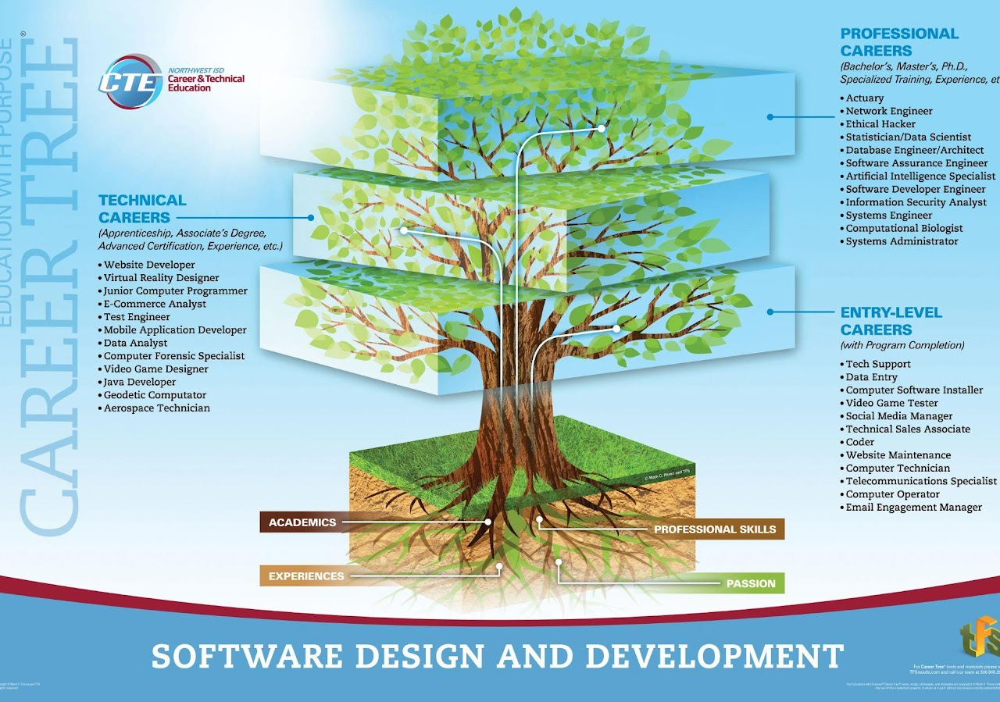

| About Me | Career |
|---|---|

I am a junior at V.R. Eaton High School. I am working hard and learning as much as I can in order to become a Software Engineer. I want to be a student at UT Dallas. Outside of academics, I enjoy music, playing guitar, art, and spending time with friends and family. |

This is the Software Design and Development career tree. It shows different jobs you can have in this field of work. Software engineers develop information systems by designing, developing, and installing software solutions. This career is often in high demand, has high pay, remote work, continuous learning, and flexible working hours. |